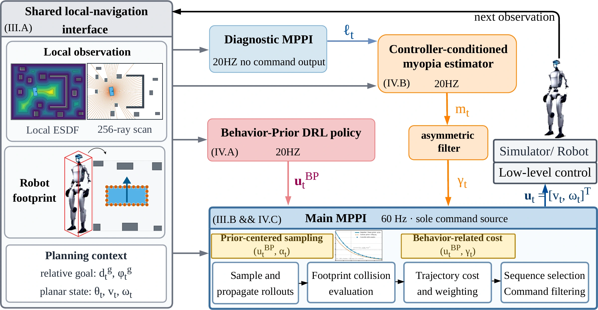
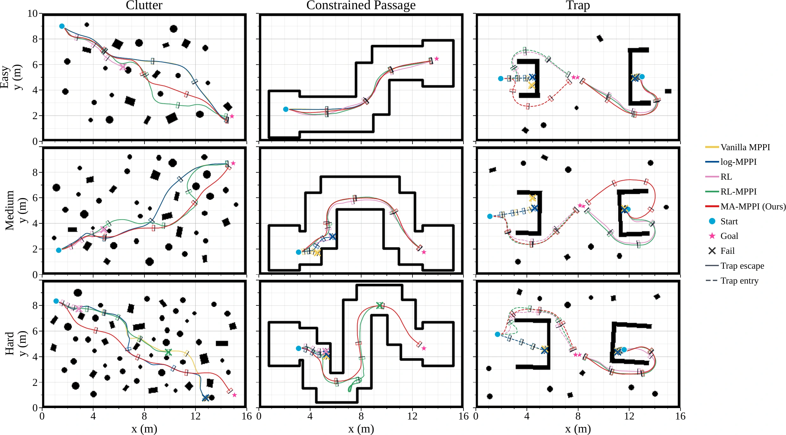

ICRA 2027 · Anonymous submission
MA-MPPI
Myopia-Aware MPPI with Adaptive Learned Behavior Prior
for Mapless Navigation
Finding a way through, one detour at a time.
14 matched physical trials per controller on a Unitree G1.
Meet the robot in action
Choose a scene to compare MA-MPPI, RL-MPPI, and Vanilla MPPI.
Camera views are paired with ROS 2 bag visualizations. Labels describe each clip; playback speed is relative to the supplied video files.
A little about MA-MPPI
Getting to a goal sometimes means moving away from it first. MA-MPPI adapts a learned behavior prior to help discover these detours, while MPPI evaluates the sampled motions and checks the robot’s footprint for collisions. Only the main MPPI commands the robot.
The controller runs onboard a Unitree G1 with a Jetson Orin NX and Livox Mid-360, without policy retraining.
How it works
A controller-conditioned myopia score adjusts prior-centered sampling, behavior alignment, and the forward-speed bound.
{kind=link}

Click the figure to take a closer look.
A quick look at simulation
Across 450 held-out paired cases covering clutter, passages, and traps, MA-MPPI achieves 96.4% overall success, compared with 86.4% for the always-on γ = 1 prior.
{kind=link}

Click the figure to compare trajectories.